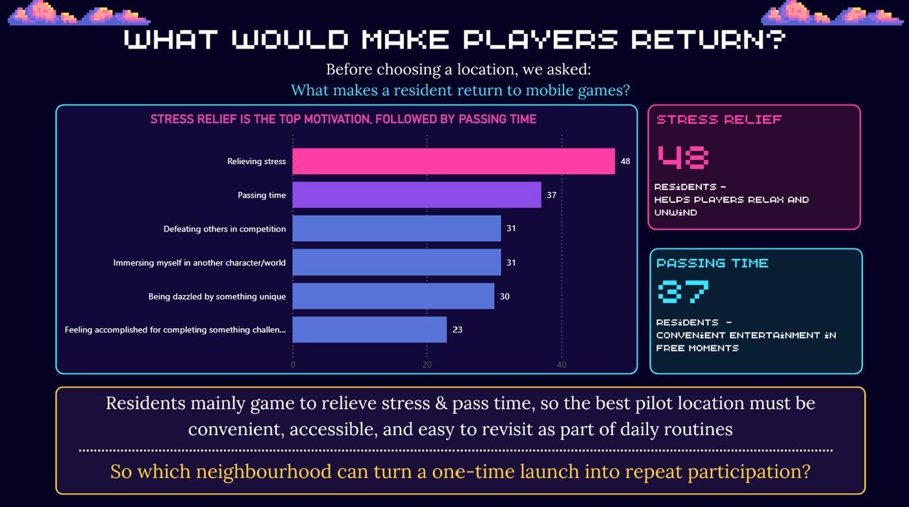
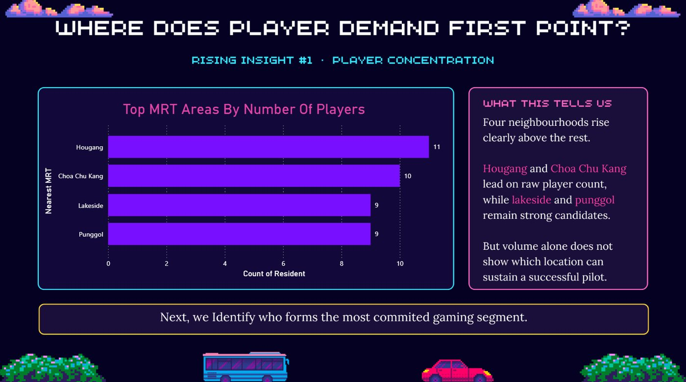
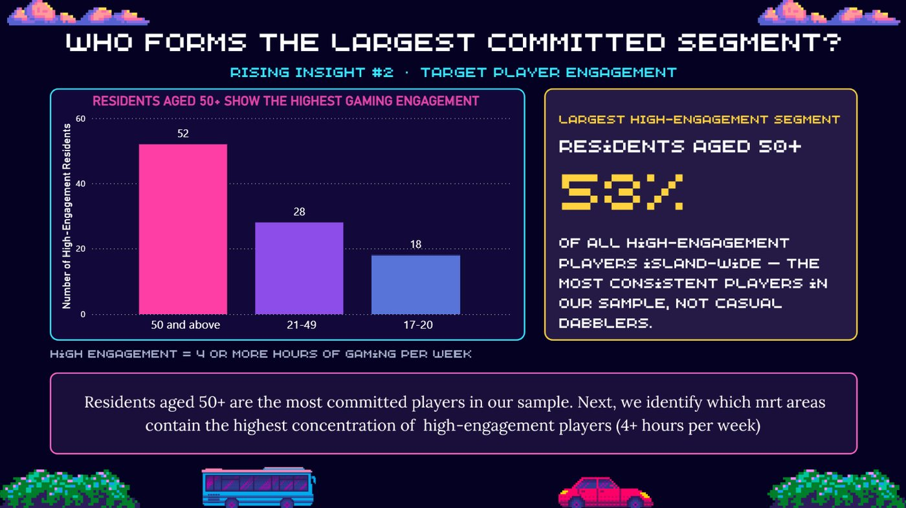
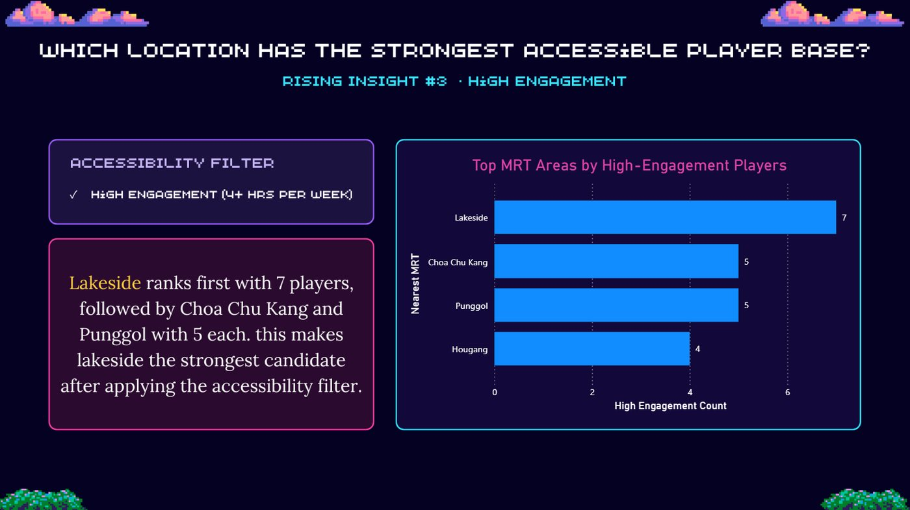
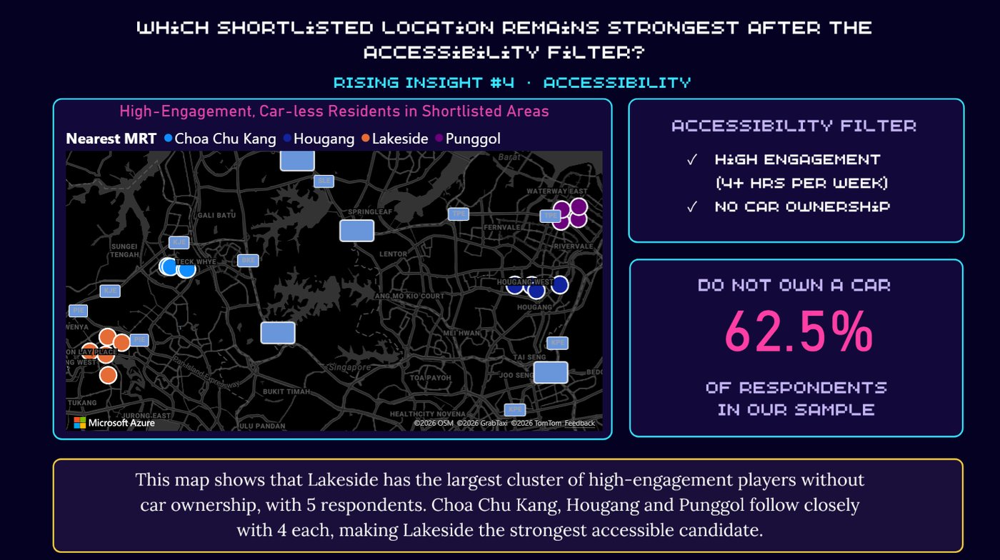
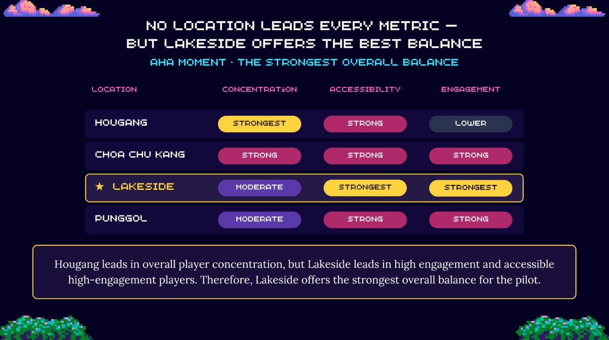

01
Overview
This project was for my Persuasive Communication with Data Storytelling module. Instead of a dashboard for exploring data, the goal was a data story: a sequence of visuals that leads a decision-maker to one clear recommendation.
02
The Brief
The scenario was a fictional one. A Singapore games company, Funtendo, runs a location-based augmented-reality mobile game called Catch & Go, where players travel to real places to catch virtual creatures. The company wants to pilot a release of new creatures and needs to choose where.
Research question: what is the most appropriate location in Singapore to pilot the release of the new Catch & Go creatures?
Our team had to answer this with the data provided, then present the case live to a judge acting as the client, followed by a question-and-answer session.
03
The Data
We worked with a survey dataset of 200 Singapore residents, supplied in a Power BI file. For each resident it recorded:
- Age group, gender, household income, dwelling type and household size
- Top reason for playing mobile games, and hours spent gaming each week
- Home location, the nearest MRT station and the distance to it
- The nearest public Wi-Fi hotspot and the distance to it
- Whether the resident owns a car
The dataset was provided for coursework and is a small sample, so it may not represent real circumstances. The findings below describe this sample.
04
Approach
Choosing the wrong location could leave the new creatures uncaught, so before recommending anywhere we set three criteria:
- CRITERION 1Player concentrationWhere are surveyed players already concentrated?
- CRITERION 2Gaming engagementWhich locations have the most high-engagement players?
- CRITERION 3AccessibilityWhere are high-engagement players without cars concentrated?
The story itself followed a narrative framework: introduction, setting, hook, a series of rising insights, an “aha” moment, and a recommendation. Each page carried one message, with a short written summary under the visual.
05
The Data Story
Hook: what makes players come back?
Stress relief was the top reason for playing mobile games (48 residents), followed by passing time (37). That suggested the pilot location should be convenient and easy to revisit as part of a daily routine.

Insight 1: where are the players?
Four neighbourhoods stood out on player numbers: Hougang (11), Choa Chu Kang (10), Lakeside (9) and Punggol (9). Volume alone, though, does not show which location can sustain a pilot.

Insight 2: who plays the most?
We defined high engagement as four or more hours of gaming a week. Residents aged 50 and above made up 53% of all high-engagement players in the sample.

Insight 3: where are the committed players?
Filtering to high-engagement players changed the ranking. Lakeside moved to first with 7, ahead of Choa Chu Kang and Punggol with 5 each.

Insight 4: who depends on public transport?
62.5% of respondents did not own a car. Among high-engagement players without a car, Lakeside again had the largest cluster.

06
Recommendation
No location led on every measure. Hougang had the most players overall, but Lakeside led on both engagement and accessibility, giving it the strongest overall balance. We recommended Lakeside for the first pilot, with three next steps:

- Launch: release the new creatures around Lakeside MRT.
- Measure: track participation, repeat visits, session length and accessibility feedback.
- Expand: move on to Choa Chu Kang if the pilot succeeds.
07
Links to the UN SDGs
- SDG 3, Good Health and Well-being: stress relief was the top reason for gaming, which points to possible benefits for recreation and well-being.
- SDG 11, Sustainable Cities and Communities: a pilot centred on an MRT station supports inclusive participation, especially for residents without cars.
08
Team & My Role
This was a team project, and every member created visuals for the story and presented part of it. The analysis and recommendation above reflect the work of the whole team.
09
Key Learnings
- A story needs one message per page. Each visual had to earn its place by moving the argument forward.
- Filters change the answer. The location with the most players was not the one with the most committed players.
- Criteria come before conclusions. Agreeing on how to judge a location first made the final recommendation easier to defend.